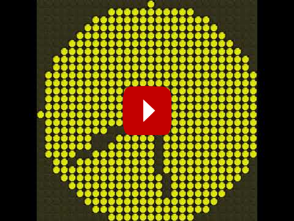
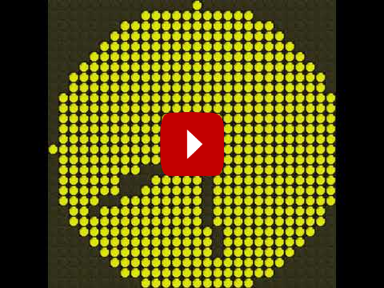

FlipDot-Simulator
See the simulator in action in the following videos.
 

Installation
The simulator relies on the
pygame framework.
Therefore this has to be installed before - pip can be used for this.:
$ pip install pygame
More information about this process is available on the pygame-website.
Next the source code must be downloaded from the project page at
github.
The archive must be extracted into an empty directory. Create a file
flipdotsim_example.py with the content listed in the example section
below and run it with python flipdotsim_example.py.
Example
1import flipdotsim
2import time
3
4# Create a Simulator with the given dimension
5display = flipdotsim.FlipDotSim(width=16, height=8)
6
7# turn some pixels on in the top left corner
8display.px(0, 0, True)
9display.px(1, 0, True)
10display.px(0, 1, True)
11# The display will not change until the show method is invoked
12display.show()
13time.sleep(2)
14
15# Lets run one dot from top left to bottom right
16for y in range(display.height):
17 for x in range(display.width):
18 display.px(x, y, True)
19 display.show()
20 time.sleep(0.1)
21 display.px(x, y, False)
Module Description
A package that allows for simulating the display without the need of a physical display. It relies on the pygame-package.
The simulator can be used in the following way. Creating a display with specific dimensions.
>>> import flipdotsim
>>> fds = flipdotsim.FlipDotSim(width=28, height=13)
Set two pixels at the top left to be turned on.
>>> fds.px(0,0, True)
>>> fds.px(0,1, True)
Actually turn on or off all pixels.
>>> fds.show()
Simulator (godot version)
There is another simulator that relies on the godot game engine. A standalone version for Windows and Linux is available from the projects releases page.
After startup the simulator can be controlled by cursor keys (moving the display) and page up/down for scaling the map.
The simulator conforms to the protocol described in the Net module: send a sequence of 1s and 0s (in ASCII) to port 10101 of the server.
Simulator (pyxel version)
There is another simulator that relies on the pyxel game engine. Therefore in order to use it pyxel must be installed.:
$ pip install pyxel
- class pyxel_sim.PyxelSim(width, height, resources='ressources/pyxel_sim.pyxres', fps=30)[source]
Simulator for the flipdot display using Pyxel. The simulator will run in a separate thread listening for updates to the display buffer. The display buffer is a 2D array of booleans, where True represents a yellow pixel and False represents a black pixel.
https://github.com/kitao/pyxel
- DEFAULT_PYXEL_RESOURCES = 'ressources/pyxel_sim.pyxres'